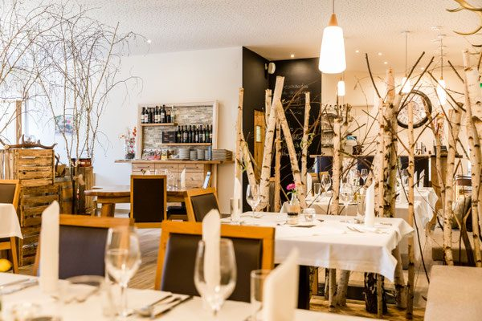
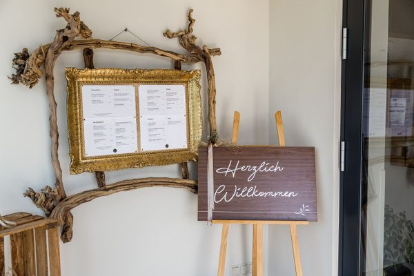
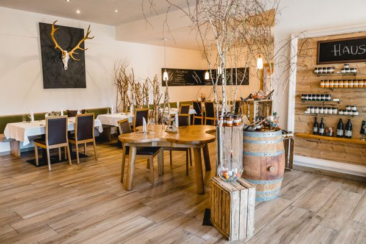
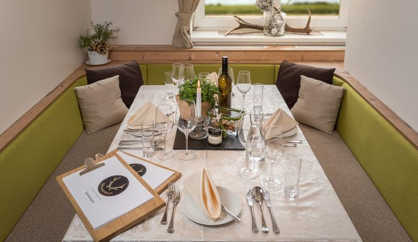

Wirtshaus & Gourmetküche · Vulkanland Route 66
Ausgezeichnet genießen.
Wir verbinden die traditionell-steirische Wirtshausküche mit modernen Gourmetgerichten und kreieren so ein einzigartiges Geschmackserlebnis – in der Thermenregion Bad Radkersburg, entlang der Vulkanland Route 66.
Ausgezeichnet genießen
Auch heuer wieder 88 Punkte.
Wir freuen uns sehr, dass unser Restaurant GenussHirsch in der Thermenregion Bad Radkersburg entlang der Vulkanland Route 66 auch heuer wieder vom Falstaff Restaurantguide mit 88 Punkten ausgezeichnet wurde.
Diese Anerkennung erfüllt uns mit großer Freude und bestärkt uns in unserem täglichen Tun. Sie motiviert unser gesamtes Team, weiterhin mit Leidenschaft, Kreativität und regionalen Produkten zu arbeiten, Neues zu kreieren und unseren Gästen besondere kulinarische Momente zu schenken.
Beim Falstaff-Voting wurden wir außerdem zum beliebtesten Ausflugslokal der Steiermark gewählt – und zu einem der besten Lokale für Backhendl in der Steiermark. Das macht uns mächtig stolz. Danke all unseren Gästen und danke für Ihre Stimmen.

Unsere Philosophie
Der Genuss
In unserer schnelllebigen Zeit kommt ein genussvolles Essen oft zu kurz.
Um Ihnen diesen Genuss schenken zu können, arbeiten wir überwiegend mit regionalen, saisonalen und hochwertigen Produkten aus unserer Region. Eine hohe Qualität und Frische liegen uns sehr am Herzen.
Wir möchten unseren Gästen ein unvergessliches kulinarisches Erlebnis bieten. Neben unserem kreativen, mehrgängigen Überraschungsmenü erwartet Sie ein begehbarer Weinkühlschrank mit über 200 erlesenen nationalen und internationalen Weinen.
-
Regional & saisonal
Überwiegend Produkte aus der Südoststeiermark, von Betrieben und Landwirten, mit denen wir seit Jahren zusammenarbeiten.
-
Wirtshaus trifft Gourmet
Traditionelle Gerichte, verfeinert durch das Wissen aus jahrelanger Arbeit als Sous Chef.
-
Das Überraschungsmenü
Kreativ, mehrgängig und jedes Mal anders – Sie lassen sich einfach führen.
-
Der Weinkühlschrank
Über 200 erlesene nationale und internationale Weine, begehbar. Sie wählen die Flasche direkt vor Ort.

Der Hirsch
Koch aus Leidenschaft, Jäger mit Überzeugung.
„Das bin ich, Fabian Palz. Diese Leidenschaft konnte ich im Romantik Hotel im Park in Bad Radkersburg leben, wo ich meine Ausbildung zum Koch absolviert habe. Mir ist es wichtig, auch die traditionellen Gerichte durch mein erlerntes Wissen als jahrelanger Sous Chef zu verfeinern.“
Wir, der GenussHirsch, wünschen Ihnen viel Genuss beim Essen und sagen Danke für Ihren Besuch.
Die Region
Südsteiermark, sonnig und erlebnisreich
Unser Wirtshaus liegt im Süden des Thermen- und Vulkanlands Steiermark in der Region Bad Radkersburg.
Diese Region zählt zu Österreichs sonnigster und erlebnisreichster Radregion, in der man tolle Radausflüge in die benachbarten Orte wie Halbenrain, Mureck, Tieschen, Klöch oder St. Anna am Aigen unternehmen kann. Wer sich danach eine Entspannung in den umliegenden Parkthermen gönnen möchte, ist in unserer Region genau richtig.
Besuchen Sie uns, besuchen Sie Bad Radkersburg, besuchen Sie unsere tolle Region.
Erlebnisbetrieb an der Vulkanland Route 66
Am 08.03.2022 erfolgte die Verleihung der Auszeichnung als Erlebnisbetrieb an der Vulkanland Route 66. Wir sind stolz darauf, ein Teil dieses tollen Projektes zu sein.
Weitere Informationen zur Vulkanland Route 66 finden Sie unter www.visitroute66.at.
Geöffnet
Wann wir kochen
- Dienstag bis Samstag
- 10:00 – 23:00 Uhr
- Küche mittags
- 11:30 – 15:00 Uhr
- Küche abends
- 17:30 – 20:30 Uhr
- Sonntag & Montag
- Ruhetag
Reservierung: Für Tische über 8 Personen rufen Sie uns bitte kurz an. Kurzfristige Reservierungen am selben Tag sind nur telefonisch möglich.

Häufige Fragen
Gut zu wissen
Wann hat die Küche geöffnet?
Wie reserviere ich für eine größere Gruppe?
Kann ich noch für heute Abend reservieren?
Was ist das Überraschungsmenü?
Gibt es eine große Weinauswahl?
Kann ich einen Gutschein kaufen?
Wir freuen uns auf Sie
Ihr Tisch im GenussHirsch
Wir freuen uns darauf, Sie willkommen zu heißen und gemeinsam mit Ihnen unvergessliche Genussmomente zu erleben.